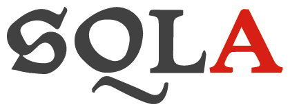
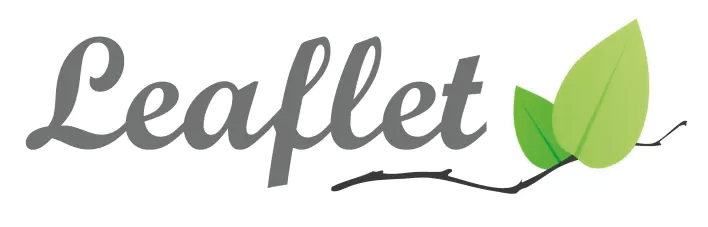

Descripción Detallada del Proyecto
El Problema
Este proyecto tiene como objetivo abordar un problema recurrente de suministro de agua potable que afecta al barrio Benjamín Herrera en Guaduas, Cundinamarca. Durante las horas de la noche, los residentes enfrentan cortes frecuentes en el servicio, lo que genera inconvenientes en su vida diaria y evidencia la necesidad de investigar sus causas subyacentes para proponer soluciones viables.
Stack Tecnológico
Para dar vida a este proyecto, se ha utilizado un conjunto de tecnologías modernas y eficientes que cubren desde la estructura de la información hasta la interacción con el usuario.
-

Python
El cerebro de la aplicación, encargado de toda la lógica del servidor.
-
Flask
Micro-framework que gestiona las rutas web y la comunicación con el frontend.
-

SQLAlchemy
Permite gestionar la base de datos de forma interactiva y segura desde Python.
-
HTML5
El esqueleto de la web, estructura todo el contenido de manera semántica.
-
CSS3
Aporta todo el diseño visual, desde los colores hasta las animaciones.
-

JavaScript
Añade interactividad en el navegador, especialmente en la gestión del mapa.
-

Leaflet.js
Librería especializada en crear los mapas interactivos que visualizan los datos.
-
Git & GitHub
Herramientas para el control de versiones y el almacenamiento del código fuente.